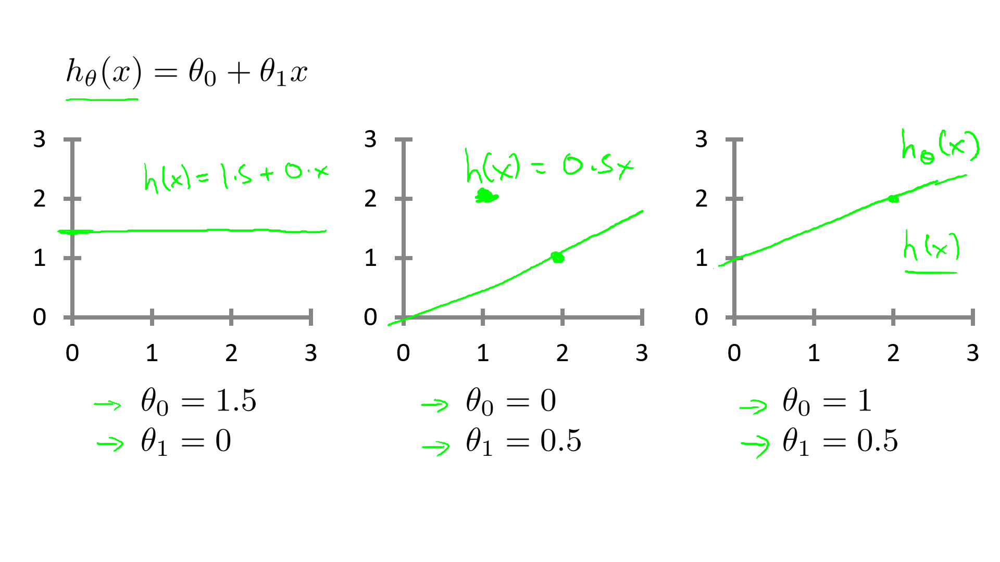

一. 单变量线性回归
1. 模型描述
参考视频: 2 - 1 - Model Representation (8 min).mkv
1.1 举例引入
我们这里有一个俄勒冈州波特兰市的住房价格数据集，数据集包含：房屋尺寸，房屋出售价格......然后，你有一个朋友。他有一套1250平的房子，他需要你告诉他这房子能卖多少钱。我们该怎么做？
1.2 模型描述
1.1 中的部分数据集如下表所示：
| Size in \(feet^2 (x)\) | Price ($) in \(1000's (y)\) |
|---|---|
| 2104 | 460 |
| 1416 | 232 |
| 1534 | 315 |
| 852 | 178 |
| … | … |
上述数据集，我们通常称为训练集（training set）。
为了方便描述和后面公式推导将这个问题进行如下标记（Notion）：
| \(m\) | 样本数量（number of training examples ） |
| \(x\) | 输入变量/特征（input of variable/features） |
| \(y\) | 目标变量/输出变量（output variable / target variable） |
| \((x, y)\) | 一个样本（one training example） |
| \((x^{(i)}, y^{(i)})\) | 第\(i\)个样本 |
好了，下面先来明确一下我们已知条件和要做的事：
我们已知了训练集（m组数据：\((x^{(1)}, y^{(1)}), (x^{(2)}, y^{(2)}), ...(x^{(m)}, y^{(m)}), 其中(x^{(i)}, y^{(i)})\)代表了第 i 组的（房屋尺寸，房屋价格）），根据这个训练集，我们要训练出我们的模型（函数），通常表示为h，即hypothesis(假设)。而这个函数h的输入是房屋尺寸，输出就是房屋价格。因此，h 是一个从x 到 y 的函数映射。
那么，对于我们这个问题，我们应该如何描述\(h\)？
一种可能的表达方式为： $$ h_\theta \left( x \right)=\theta_{0} + \theta_{1}x\tag{1.2.1} $$ 因为只含有一个特征/输入变量，因此这样的问题叫作单变量线性回归问题。
Note
线性回归中线性的含义： 因变量y对于未知的回归系数（\(\theta_0\)，\(\theta_1\)，.... \(\theta_n\)） 是线性的。
2. 代价函数
参考视频: 2 - 2 - Cost Function (8 min).mkv
Training Set
| Size in \(feet^2 (x)\) | Price ($) in \(1000's (y)\) |
|---|---|
| 2104 | 460 |
| 1416 | 232 |
| 1534 | 315 |
| 852 | 178 |
| … | … |
Hypothesis: \(h_\theta \left( x \right)=\theta_{0}+\theta_{1}x\)
Parameters: \(\theta_{0}\) ， \(\theta_{1}\)
通过上一节，我们知道了，我们要完成朋友的需求（根据他房子的大小预测房价），要知道假设函数 \(h\)，我们对 \(h\) 做出这样一种假设：\(h_\theta \left( x \right)=\theta_{0}+\theta_{1}x\)。通过观察这个函数，我们可以把这个问题转化为求\(\theta_{0}\) 和 \(\theta_{1}\)，从而当你朋友把房子大小告诉你，你将其代入公式即可得到预测的房价。那么，我们如何选择呢\(\theta_{0}\) 和 \(\theta_{1}\)？
首先，我们先直观理解\(h_\theta \left( x \right)\) ---下图是\(\theta_{0}\) 和 \(\theta_{1}\)取不同值时，\(h\)的整体图像。

Note
上面图像为了方便省略了\(\theta\)下标，即 \(h_\theta(x) = h(x)\)，后面也可能会这样做。
结合图像描述我们的任务
- 把训练集数据绘制在下图中（并非上面的房价训练集，仅举例示意）

- 我们要做的就是绘制一条直线（下图蓝色的线）尽量地与上面那些点有和好的拟合，这条直线就是\(h_\theta(x)\)。如何确定这条直线也就是确定\(\theta_0\)和\(\theta_1\)。

- 我们的idea：
Choose \(\theta_0, \theta_1\)
so that \(h_\theta(x)\) is close to \(y\) for our training examples \((x, y)\)
将我们的任务以公式化标记，即：
线性回归实际上就是解决一个关于\(\theta_0, \theta_1\)的最小化问题(minimize)。我们希望我们的直线与那些点有很好的拟合，那我们把每一个点预测得到的值\(\Big(\)将x代入假设函数可得到，即\(h_\theta(x)\Big)\)与真实值y求一个差的平方。再把这些平方累加。即:
我们只要让这个平方和最小即可。
注意,
关于式(2.1.1)前面\(\frac{1}{2m}\)
- \(\frac{1}{m}\)是因为求和项有m个，这里除以m，是求平均值。
- \(\frac{1}{2}\)为了后面求导消去
- 其实这个\(\frac{1}{2m}\)对我们求最小值没有任何影响，只是为了计算方便这么写。
关于式(2.1.2)的几何意义
- 所有数据点与拟合直线在y轴方向的截距的平方和
在本例子中，
- \(h_\theta \left( x \right)=\theta_{0} + \theta_{1}x\)
通常，为了方便起见，我们定义一个函数，也就是代价函数(cost function)，如下：
我们的最终目标就转化为：
这里我们定义的式(2.1.3)损失函数, 也被称为平方误差函数(squared error function)。然而，损失函数不止这一种形式，但是在回归问题中，平方误差函数都是比较合理和比较常用的选择。
3 代价函数直观理解1
参考视频: 2 - 3 - Cost Function - Intuition I (11 min).mkv
在上一个小节，我们得到了代价函数的定义。在这一小节中，我们通过一个例子来获取一些直观的感受，看看代价函数到底是在干什么。
Hypothesis: \(h_\theta(x)=\theta_0+\theta_1x\)
Parameters: \(\theta_0,\ \theta_1\)
Cost Function: \(J(\theta_0,\theta_1)=\frac {1} {2m}\sum\limits_{i=1}^{m}(h_\theta(x^{(i)})-y^{(i)})^2\)
Goal: \(\mathop{minimize} \limits_{\theta_0,\ \theta_1}J(\theta_0,\theta_1)\)
为了让代价函数 \(J\) 有更好的，可视化效果，我们简化假设函数为\(h_\theta(x)=\theta_1x\)，即假设\(\theta_0=0\)。简化后：
\(h_\theta(x)=\theta_1x\)
\(J(\theta_1)=\frac {1} {2m}\sum\limits_{i=1}^{m}(h_\theta(x^{(i)})-y^{(i)})^2\)
Goal: \(\mathop{minimize} \limits_{\theta_1}J(\theta_1)\)
在确定好不同的 \(\theta_1\) ,之后画出假设函数 \(h\) 和代价函数 \(J\)。本例中，假定训练集为\((1,1), (2,2), (3,3)\)。
- 当 \(\theta_1=1\) 时，

注意到，因为\(\theta_1=1\)，此时 \(h_\theta=y\) ,所以 \(J=0\) 。并在右边图上画出第一个点(1,0)。
- 当 \(\theta_1=0.5\) 时，

\((x,y)\)依次取(1, 0.5), (2, 1), (3, 1.5) 计算 \(J \approx 0.58\) 。并在右边图上画出第二个点(0.5,0.58)。
- 当 \(\theta_1=0\) 时，

同理，当 \(\theta_1\) 取不同值时，我们可以计算出 \(J\) ，并在右侧画出 \(J\) 的大致图像。

总结： 我们通过取不同的 \(\theta_1\) ，绘制出了 \(J\) 。

So for each value of \(\theta_1\) , we wound up with a diffent value of \(J(\theta_1)\) . And we colud then use this to trace out this plot on the right. Now you remember the optimization objective for our learning algorithm is we want to choose the value of \(\theta_1\) that minimize \(J(\theta_1)\). This was our objective function for the linear regression.
现在，我们观察右侧那条曲线，会发现，当 \(\theta_1=1\) 时，\(J(\theta_1)\)最小。再观察左边的拟合情况会发现，这确实是最好的情况。对于这个特殊的训练集，我们确实完美地拟合了它。
And that's why minimizing \(J(\theta_1)\) corresponds to finding a straight line that fits the data well.
4. 代价函数的直观理解II
参考视频: 2 - 4 - Cost Function - Intuition II (9 min).mkv

代价函数的样子，则可以看出在三维空间中存在一个使得\(J(\theta_{0}, \theta_{1})\)最小的点。

通过这些图形，我希望你能更好地理解这些代价函数 \(J\) 所表达的值是什么样的，它们对应的假设函数是什么样的，以及什么样的假设对应的点，更接近于代价函数 \(J\) 的最小值。
当然，我们真正需要的是一种有效的算法，能够自动地找出这些使代价函数 \(J\) 取最小值的参数 \(\theta_{0}\) 和 \(\theta_{1}\) 来。
我们也不希望编个程序把这些点画出来，然后人工的方法来读出这些点的数值，这很明显不是一个好办法。我们会遇到更复杂、更高维度、更多参数的情况，而这些情况是很难画出图的，因此更无法将其可视化，因此我们真正需要的是编写程序来找出这些最小化代价函数的 \(\theta_{0}\) 和 \(\theta_{1}\) 的值，在下一节视频中，我们将介绍一种算法，能够自动地找出能使代价函数 \(J\) 最小化的参数 \(\theta_{0}\) 和 \(\theta_{1}\) 的值。
5. 梯度下降
参考视频: 2 - 5 - Gradient Descent (11 min).mkv
梯度下降是一个用来求函数最小值的算法，我们将使用梯度下降算法来求出代价函数\(J(\theta_{0}, \theta_{1})\) 的最小值。
梯度下降背后的思想是：开始时我们随机选择一个参数的组合\(\left( {\theta_{0}},{\theta_{1}},......,{\theta_{n}} \right)\)，计算代价函数，然后我们寻找下一个能让代价函数值下降最多的参数组合。我们持续这么做直到找到一个局部最小值（local minimum），因为我们并没有尝试完所有的参数组合，所以不能确定我们得到的局部最小值是否便是全局最小值（global minimum），选择不同的初始参数组合，可能会找到不同的局部最小值。

想象一下你正站立在山的这一点上，站立在你想象的公园这座红色山上，在梯度下降算法中，我们要做的就是旋转360度，看看我们的周围，并问自己要在某个方向上，用小碎步尽快下山。这些小碎步需要朝什么方向？如果我们站在山坡上的这一点，你看一下周围，你会发现最佳的下山方向，你再看看周围，然后再一次想想，我应该从什么方向迈着小碎步下山？然后你按照自己的判断又迈出一步，重复上面的步骤，从这个新的点，你环顾四周，并决定从什么方向将会最快下山，然后又迈进了一小步，并依此类推，直到你接近局部最低点的位置。
批量梯度下降（batch gradient descent）算法的公式为：
其中 \(\alpha\) 是学习率（learning rate），它决定了我们沿着能让代价函数下降程度最大的方向向下迈出的步子有多大，在批量梯度下降中，我们每一次都同时让所有的参数减去学习速率乘以代价函数的导数。
在梯度下降算法中，还有一个更微妙的问题，梯度下降中，我们要更新\({\theta_{0}}\)和\({\theta_{1}}\) ，当 \(j=0\) 和\(j=1\)时，会产生更新，所以你将更新\(J\left( {\theta_{0}} \right)\)和\(J\left( {\theta_{1}} \right)\)。实现梯度下降算法的微妙之处是，在这个表达式中，如果你要更新这个等式，你需要同时更新\({\theta_{0}}\)和\({\theta_{1}}\)，我的意思是在这个等式中，我们要这样更新：\({\theta_{0}}\):= \({\theta_{0}}\) ，并更新\({\theta_{1}}\):= \({\theta_{1}}\)。
实现方法是：你应该计算公式右边的部分，通过那一部分计算出\({\theta_{0}}\)和\({\theta_{1}}\)的值，然后同时更新\({\theta_{0}}\)和\({\theta_{1}}\)。
让我进一步阐述这个过程：